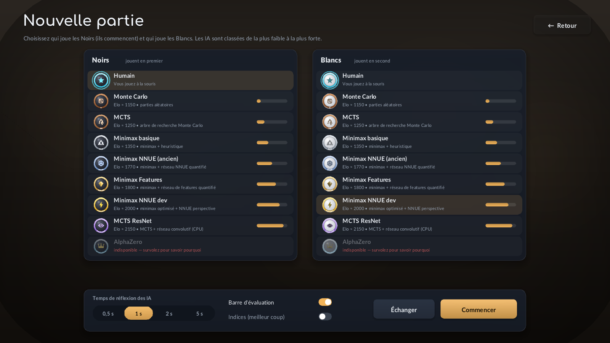

The Yolah application, and SDL3 from scratch
How the graphical application is built: one C++ file in tagged sections, the SDL3 window and renderer, vector drawing with triangles, text with stb_truetype, immediate-mode widgets, the AIs thinking in background threads, and the files that define themes, sprites and the AI roster.
1Build and run
The application lives in app/. It needs SDL3 and the engine of the repository; nothing else. SDL3 was compiled into ~/opt/SDL3; on a machine without it, CMake downloads and compiles it (it takes a minute).
cmake -S app -B app/build -DCMAKE_BUILD_TYPE=Release
cmake --build app/build -j
./app/build/yolah_app
# optional: the ResNet players (MCTS ResNet, AlphaZero) on the GPU with libtorch
cmake -S app -B app/build -DYOLAH_APP_TORCH=ON -DCMAKE_PREFIX_PATH=<libtorch>| Path | Content |
|---|---|
app/yolah_app.cpp | the whole application (~2 800 lines) |
app/CMakeLists.txt | SDL3 (installed or downloaded), the engine as a static library, the executable |
app/third_party/ | stb_image.h, stb_image_write.h, stb_truetype.h: single-header libraries, public domain |
app/assets/fonts/ | Lato (interface) and Comfortaa (titles), OFL licence |
app/assets/ai_roster.json | the AIs offered, weakest first, and the analysis engine |
app/assets/themes/*.json | one file per board theme |
app/assets/sprites/sprites.json | the piece sprites; PNG files may replace the drawings |
Inside the file, every section starts with a tag. Search for it to jump there: @@CONFIG, @@UTIL, @@ENGINE, @@AI, @@DRAW, @@TEXT, @@THEME, @@SPRITE, @@FX, @@UI, @@BOARD, @@APP, @@SCENE_MENU, @@SCENE_SETUP, @@SCENE_GAME, @@SCENE_THEMES, @@SCENE_RULES, @@SCENE_PUZZLES, @@SCENE_EDITOR, @@MAIN. The table of contents at the top of the file lists them with one line each.
Keyboard in a game: H hint, E evaluation bar, U or Backspace undo, F flip the board, Space pause (two AIs), Esc menu.
2A tour of the application




3Architecture
The file reads from the bottom up: small tools first, then the engine wrapper and the AIs, then drawing, then the scenes that use all of it, and at the very end the four functions SDL calls.
3.1Scenes
A scene is one screen. The App holds Scene scene, and SDL_AppIterate calls the function of the current scene once per frame. Changing screen is a.go(Scene::Setup): it remembers the time (for a fade-in) and, when leaving a game, stops the AIs. A scene function does three things in order: react to the input, compute where things go from the window size, and draw. Nothing is kept between frames except the state the scene really owns (App::game, App::setup).
3.2Threads
Drawing happens on the main thread, 60 times per second. An AI may think for seconds, so it must not run there: the window would freeze. Each search runs in its own thread, and so does the analysis.
Tokens. Every position gets a number, game.token, incremented by each move and each undo. A search is started for a token and its result is only accepted for that same token: if the human undoes a move while the AI thinks, the late answer is ignored. The same goes for the analysis snapshot: the evaluation bar only uses a snapshot whose token is the current one.
The graveyard. A search cannot be killed safely. When it is no longer wanted, its thread is moved to g_graveyard, finishes on its own, and is joined later (every frame for the finished ones, all of them when the application quits). The dev player can also be told to stop at once through its stop_flag().
One search at a time per player. An engine player is not made for two simultaneous searches: a mutex in AiAgent::Shared makes a new search wait until the abandoned one has finished.
4SDL3 in five ideas
4.1SDL owns the loop
With #define SDL_MAIN_USE_CALLBACKS 1 before #include <SDL3/SDL_main.h>, there is no main() to write. The program gives SDL four functions, and SDL calls them. This is the structure SDL3 recommends: the same code works on desktop, phones and the web.
SDL_AppResult SDL_AppInit(void** appstate, int argc, char* argv[]); // create the window; *appstate = our App
SDL_AppResult SDL_AppEvent(void* appstate, SDL_Event* event); // one event: mouse, keyboard, window
SDL_AppResult SDL_AppIterate(void* appstate); // one frame: logic + drawing
void SDL_AppQuit(void* appstate, SDL_AppResult result); // clean upEach returns SDL_APP_CONTINUE to go on. The appstate pointer is ours: the App object, created in SDL_AppInit and deleted in SDL_AppQuit.
4.2A window and a renderer
SDL_Init(SDL_INIT_VIDEO);
SDL_CreateWindowAndRenderer("Yolah", 1600, 900, SDL_WINDOW_RESIZABLE | SDL_WINDOW_HIGH_PIXEL_DENSITY, &window, &renderer);
SDL_SetRenderVSync(renderer, 1); // present at the screen's rate (no tearing, no wasted CPU)
SDL_SetRenderDrawBlendMode(renderer, SDL_BLENDMODE_BLEND); // colours with alpha are transparentThe renderer is SDL's 2D drawing API, running on the GPU (OpenGL here, Direct3D or Metal elsewhere) or in software. Everything is drawn into a hidden image; SDL_RenderPresent shows it at the end of the frame.
4.3Events and coordinates
Mouse events give window coordinates; on a high-density screen (a "Retina" display) one window unit is two pixels. SDL_ConvertEventToRenderCoordinates(renderer, event), called first in SDL_AppEvent, converts them to rendering pixels, the unit of all the drawing code. The application keeps an Input structure: mouse position, button held, pressed or released this frame, wheel, keys pressed. Events fill it; SDL_AppIterate reads it and clears the "this frame" parts at its end.
case SDL_EVENT_MOUSE_BUTTON_DOWN:
if (e->button.button == SDL_BUTTON_LEFT) { a->in.down = true; a->in.pressed = true; }
break;
case SDL_EVENT_KEY_DOWN:
if (!e->key.repeat) a->in.keys.push_back(e->key.key); // SDLK_ESCAPE, SDLK_H...
break;4.4Textures
A texture is an image stored on the graphics card. Two kinds are used. Static textures are filled once from pixels in memory with SDL_UpdateTexture: the glyph atlases, the board patterns, PNG sprites. Target textures (SDL_TEXTUREACCESS_TARGET) can be drawn into: SDL_SetRenderTarget(renderer, tex) redirects the drawing, which is how the sprites are exported to PNG. SDL_RenderTexture(renderer, tex, src, dst) draws the rectangle src of a texture into dst; colour and alpha modulation (SDL_SetTextureColorMod) tint it.
4.5Small services
SDL_GetPrefPath("Yolah", "YolahApp"): a per-user folder where the settings are saved (~/.local/share/Yolah/YolahApp/on Linux).SDL_GetBasePath(): the executable's folder, searched first forassets/, so that a copied application finds its files.SDL_CreateSystemCursor(SDL_SYSTEM_CURSOR_POINTER): the hand shown over anything clickable.SDL_SetHint(SDL_HINT_VIDEO_DRIVER, "offscreen"): no window at all, used by the screenshot mode.SDL_GetTicksNS(): a clock in nanoseconds, the time base of every animation.
5One frame
SDL_AppResult SDL_AppIterate(void* appstate) {
App* a = static_cast<App*>(appstate);
a->dt = now - a->time; a->time = now; // seconds since the last frame
SDL_GetRenderOutputSize(a->renderer, &a->w, &a->h); // the window may have been resized
a->s = std::min(a->w / 1600.0f, a->h / 900.0f); // scale: lengths are written for 1600 × 900
SDL_RenderClear(a->renderer);
switch (a->scene) { case Scene::Menu: scene_menu(*a); break; ... }
// toast message, fade-in, cursor
SDL_RenderPresent(a->renderer);
a->in.pressed = a->in.released = false; a->in.keys.clear(); // "this frame" input consumed
return SDL_APP_CONTINUE;
}Scale. The layout is designed for 1600 × 900. Every length is multiplied by a.s, so the whole interface grows and shrinks with the window. Textures that depend on a size (the board pattern) are generated for the real pixel size and cached, so they stay sharp.
Time, not frames. Animations depend on a.time and a.dt in seconds, never on a frame count: they last the same on a 60 Hz and a 144 Hz screen.
6Drawing shapes
SDL's renderer draws rectangles and lines without anti-aliasing, and textures. For rounded buttons, round pieces and soft shadows, the application uses SDL_RenderGeometry: a list of triangles whose vertices each carry a position and a colour; the colours are interpolated across each triangle, so gradients come for free.
A shape is a fan: a centre vertex and a closed outline. To smooth the edge, each outline vertex is copied one pixel further out with alpha 0, and a thin ring of triangles joins the two outlines: the edge fades over one pixel instead of being a staircase. With a fringe of 30 pixels instead of 1, the same function draws a soft shadow.
draw::round_box({x, y, w, h}, 10 * s, top_colour, bottom_colour); // a button
draw::shadow({x, y + 8 * s, w, h}, 16 * s, 28 * s, hex(0x000000, 90)); // its shadow (drawn first)
draw::circle_lit(c, r, light, hex(0x5b6170), hex(0x0a0c11)); // a black stone lit from the top left
draw::arrow(from, to, width, colour); // the hintThe board itself is not drawn with triangles: its squares are a texture computed pixel by pixel (section 11), once per theme and size.
7Drawing text
SDL3 does not draw text by itself. The application reads the .ttf files with stb_truetype.h, a single public-domain header. For each font and each pixel size used, it draws all the needed characters once into one texture, an atlas, and remembers where each one is. Drawing a string is then one SDL_RenderTexture per character, from its place in the atlas to its place on screen.
The characters packed are ASCII, Latin-1 (all French accents) and a few symbols (→, •, ≈, …). A character outside that list shows as ?; to add one, append its code point to the list in TextEngine::load, provided the font contains it (Lato has no ⇄ or ▶, for instance). The text is UTF-8 in the source: "\xC3\xA9" is é. Small sizes are packed with 2× horizontal oversampling, which keeps them sharp.
a.text.draw(Font::Bold, 19 * s, "Minimax NNUE dev", {x, y}, pal::text); // top-left at (x, y)
a.text.draw(Font::Title, 140 * s, "YOLAH", {cx, y}, colour, Align::Center);
float w = a.text.width(Font::Regular, 16 * s, label);
a.text.paragraph(Font::Regular, 14 * s, description, box, pal::dim); // wrapped in box8Immediate-mode widgets
There are no button objects. A scene says, every frame, "a button here, with this label", and the same call draws it and returns true on the frame it is clicked:
if (a.ui.button("start", {x, y, 200 * s, 50 * s}, "Commencer", Style::Primary)) a.start_game();
a.ui.toggle("t_eval", box, "Barre d'évaluation", a.settings.show_eval); // flips the bool when clicked
a.settings.time_index = a.ui.segmented("time", box, TIME_LABELS, a.settings.time_index);This style ("immediate mode") suits a game well: the interface is always exactly the current state, with nothing to keep in sync. The only memory is a float per widget id for the animations (hover glow, press, the sliding highlight of a segmented choice), kept in a map and eased towards its target each frame by Ui::anim. A widget is "clicked" when the button is released over it. ui.blocked makes widgets ignore the mouse while a modal box (the end of a game) is open, and ui.hovering asks for the hand cursor.
9The board
The engine numbers the squares 0 (a1) to 63 (h8): file = s % 8, rank = s / 8. On screen, rank 8 is at the top; flipped, the board turns by 180°. BoardView::square(s) gives the screen box of a square and BoardView::at(point) the square under the mouse; everything else uses these two.
9.1Drawing order
- shadow and frame (rounded boxes with gradients), the squares texture, the coordinates;
- the last move (both squares tinted), the holes (dark rounded pits, each growing in when it opens);
- the selection and the legal destinations (dots; a ring under the mouse);
- the pieces, except the one that is moving or dragged;
- the principal variation (numbered arrows), the hint (pulsing arrow and its label);
- the moving piece, then the dragged piece: they pass over everything.
9.2Playing a move
A human clicks a piece then a destination, or drags the piece; BoardView::input returns the move if it is legal. The move is applied to the Match at once, and the board only shows it moving: BoardView::anim remembers the move and its start time, and for 0.34 s the piece is drawn between the two squares, lifted along a sine arc, while the hole appears behind it with debris. The next AI search waits for the animation to finish. A side that cannot move passes automatically after 0.8 s, with a message.
10The AIs and the analysis
10.1The roster
assets/ai_roster.json lists the AIs from the weakest to the strongest. The application never builds a player itself: it reads the same .cfg files as the tournaments and gives them to Player::create (player/player.cpp).
{ "id": "resnet", "name": "MCTS ResNet", "family": "MCTS + réseau convolutif (CPU)", "elo": 2150,
"sprite": "resnet", "config": "az_vs_nnue/resnet_supervised.cfg",
"description": "Recherche Monte Carlo guidée par un réseau convolutif...",
"overrides": { "backend": "cpu", "weights": "../nnue/cnn_resnet_256x30_value_policy.bin", "nb threads": 8 },
"torch overrides": { "backend": "torch", "weights": "../nnue/cnn_resnet_256x30_value_policy.ts" } }| Key | Meaning |
|---|---|
config | a file of config/; "microseconds" is replaced by the time per move chosen in the application, "nb threads" is capped to the cores minus two |
overrides | keys that replace those of the .cfg; torch overrides only in a -DYOLAH_APP_TORCH=ON build |
weights paths | "../x" is relative to config/ (the convention of the .cfg files), anything else to the repository; a missing file makes the AI unavailable, and missing hint says what to do |
elo | indicative: only the order matters for now (it is the order of the list) |
analysis | the engine of the evaluation bar, the hint and the variation (the dev player) |
The ResNet players need libtorch only for the GPU. Without it they use the CPU backend (nn::ResNetCPU, weights exported by nnue/resnet_export.py), much slower, so weaker at equal time. AlphaZero is unavailable until its latest network is copied into models/ and exported.
10.2The analysis engine
Whatever the players are, the Analyzer searches the current position with the dev minimax player, in slices of 120 ms (each slice restarts the iterative deepening; the transposition table makes the restart cheap), for up to 20 seconds, and publishes after each slice the value, the depth, the best move and the principal variation. The dev player was given one small public function for this, principal_variation(position, max_len), which follows the best moves stored in its table.
Values. The engine's value is for the side to move; the application turns it to Black's point of view. Below 30 000 in absolute value, it is the network's tanh × 30 000, an expected result between −1 and 1: the bar gives Black the share (1 + v / 30000) / 2, and the label shows that chance in percent for the side ahead. Above 30 000 the result is proven: 30 000 + the final score difference, shown as "Gain +3".
11Themes and sprites
11.1A theme
{ "id": "bois", "name": "Bois précieux", "pattern": "wood", "pattern strength": 0.75, "seed": 3,
"light": "#e8c99b", "dark": "#a8703f",
"frame top": "#5b371d", "frame bottom": "#2f1b0d", "frame line": "#e2b77d", "coordinates": "#f1dcb8",
"hole": "#1c120b", "hole rim": "#6d4626",
"background top": "#2b2621", "background bottom": "#110e0b",
"last move": "#ffd76a70", "selection": "#7fd1ff90", "legal move": "#20140c80", "hint": "#5ee08a", "accent": "#f2b45a" }Colours are #rrggbb or #rrggbbaa (with transparency). To create a theme, copy a file of assets/themes/, change id, name and the colours: it appears in the list at the next start (files are sorted by name, hence the number prefixes). The pattern picks the texture of the squares, computed by make_board_texture from value noise and fractal noise (fbm):
| pattern | how it is made |
|---|---|
wood | growth rings: a sine across the grain, bent by low-frequency noise, plus fine fibres; horizontal and vertical grain alternate |
marble | soft veins: a sine bent by strong turbulence, sharpened, over cloudy noise |
stone | fractal noise and a few bright specks |
neon | glowing edges around each square |
flat | almost plain |
Each square gets a small bevel (lighter top-left edge, darker bottom-right) that makes the board look carved. seed changes the random pattern, pattern strength its contrast.
11.2A sprite
{ "id": "dev", "name": "Minimax NNUE dev", "emblem": "bolt",
"ring top": "#fff1a0", "ring bottom": "#d39b12", "emblem color": "#ffe14d", "tier": 6 }A piece is a stone, black or white depending on the side, lit from the top left; a metal ring whose colour tells the strength (bronze, silver, gold, violet, diamond); tier small pips; an emblem drawn by code (star, dice, branch, tree, hex, prism, bolt, eye, crown, heart, shield, dot), darker on the white stone; and, for the human, a pulsing halo ("halo": true). "image": "file.png" replaces the whole drawing with a picture of this folder.
The button Exporter les sprites en PNG (Themes and sprites screen) renders every sprite on both stones into 256 × 256 images in assets/sprites/export/: a starting point to paint one's own. The editor (next steps) will change these files from the application.
12Animations and effects
Two kinds of motion. Tweens compute a value from the time elapsed since a start, through an easing curve: the sliding piece (ease_in_out_cubic), a hole growing in (ease_out_back, which overshoots a little), the menu buttons, the evaluation bar (eased towards its target every frame). Effects are small objects with a life of their own:
struct Effect {
virtual ~Effect() = default;
virtual bool update(float dt) = 0; // false: finished, removed
virtual void draw(TextEngine& text) = 0;
};
a.fx.add(std::make_unique<FloatText>(position, "+1", colour, size));The application has Debris (a hole opens), FloatText (the +1 of a move), Ripple (a piece lands) and Confetti (a won game). This interface is the hook for the effects to come (puzzle effects, special squares): a new effect is a new class with these two functions, added to a.fx.
13Screenshots and tests
The application can render without a window and save a picture, which is how the images of this page were made and how a change can be checked without clicking:
./yolah_app --screenshot menu.bmp --scene menu
./yolah_app --screenshot game.bmp --scene game --black human --white dev --plies 16 --tab 1 --hint --frames 220
./yolah_app --screenshot end.bmp --scene game --black basic_minmax --white dev --time 0 --frames 2500 # a whole AI game--screenshot switches to SDL's offscreen video driver and the software renderer, draws --frames frames (enough for the AIs or the analysis to work) and saves the last one. Other options: --size WxH, --theme ID, --scene setup|themes|rules|puzzles|editor, --verbose (the AI players print to the terminal). Test runs do not overwrite the user's settings.
14What comes next
- Rules as a game. An interactive tutorial: step-by-step lessons on the board (move like a queen, the hole left behind, passing, counting), each with a small exercise.
- Puzzle editor. Paint holes, place the 4 pieces of each side, choose the sprites of the players, of the holes and of the empty squares, the side to move, the opposing AI and the background image; puzzles saved as JSON files.
- Levels. Sequences of puzzles, created by any user, with progress.
- Effects. New
Effectclasses, attached to puzzles or squares. - Fewer than 4 pieces. The engine assumes exactly 4 pieces per side (
Yolah::movestakes four squares from the bitboard). Puzzles with fewer pieces need a generalised move generation, measured for speed and checked with every AI. The networks have only seen 4 against 4 positions from real games: on unusual positions their evaluations are less reliable, the search compensates partly.